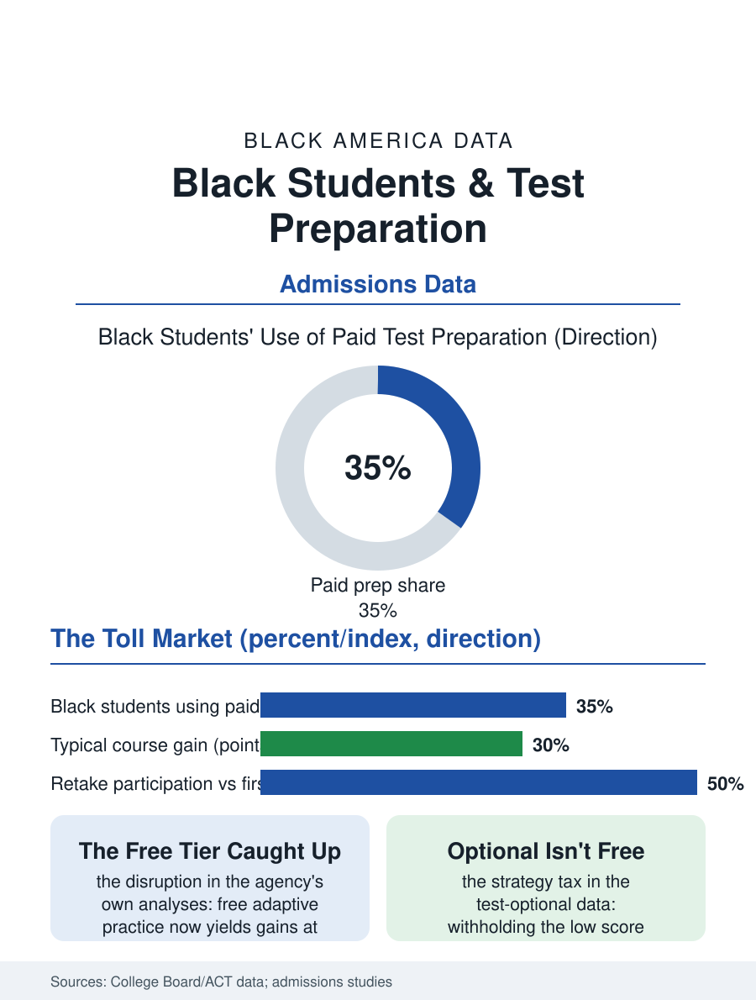

Black Education
The Toll Market: Black Students and Test Preparation
The toll market's tiers, the test-optional earthquake's strategy tax, and the free platform that caught the paid course. The test prep file.

Test preparation is the admissions file's toll market: the course, the tutor, and the book sell the score's improvement at prices from the free library's shelf to the five-figure private package, and Black students' purchases concentrate at the market's free and public end, so that the score gap the prep purports to treat is partly the prep gap itself, measured in the testing agencies' own participation data. This article reads the test prep file.
The Market's Tiers
The prep industry's structure divides by the evidence's honesty: the score gains in the independent studies are real and modest, on the order of a few dozen points for the standard course against the industry's advertising, and distributed by the student's starting point and the practice's volume rather than the brand's prestige, so that the expensive tier's product is substantially the discipline and the diagnostic, goods the free platforms now also supply, a disruption the last decade's data show in the free prep's uptake and the score distributions' slow response. The school's tier is the public's answer where it exists, the in-school SAT day and the embedded prep of the districts that adopted them, whose effect in the participation data is largest on the taking itself, the prepped student likelier to sit for the test and to retake it, the score's second sitting being the cheapest points in the file. The Black student's prep portfolio in the survey data runs heavy on the school and the self-guided and light on the purchased, a distribution that is partly the wealth file's and partly the information file's, the market's free tier being genuinely new enough that its awareness distributes by the counselor's ratio of the other file. The book and the question bank at the market's floor deserve the file's footnote, because the used book's previous owner's markings are the poor student's accidental tutor in the data's smallest irony, and the library's single copy, reserved and renewed across the season's cohort, is the prep system's public library in the literal sense.
The Test-Optional Earthquake
The admissions file's great recent event re-priced the whole market: the test-optional wave, in which the selective colleges made the score the applicant's choice to submit, converted the prep question from how high to whether at all, and the Black applicant's submission behavior in the admissions data, the lower scores withheld at higher rates in the first cycles, revealed the strategy's information demands, the student with the counselor and the data submitting optimally and the student without submitting by the rumor, until the strategy's literature and the colleges' own guidance began to equalize the knowledge. The test-required restorations at the prominent universities, argued on the equity evidence that the score was the low-income applicant's friend against the polished file's other elements, have made the prep market's second era as contested as its first, with the file's honest position being the data's: the score is one signal whose cost of production is unequally distributed, and every admissions regime prices that inequality differently rather than not at all.
Practice, Priced Fairly at Last
The test prep file closes on the disruption's completion, because the free, adaptive, official practice platform, built by the testing agency itself with the learning nonprofit, is the file's demonstrated equalizer, its heaviest users gaining on the score distributions at the paid course's own magnitudes in the agency's published analyses, so that the remaining prep gap is the awareness and the hours, the practice's volume being the input money cannot finally buy, only schedule. The school that builds the practice into the day, the district that buys the diagnostic for every junior, converts the file from a market to a curriculum, and its score data are the policy's argument in the next budget's hearing. The agencies count the sittings each year, the retakes and the submissions by the demographics the file names. The last entry is the practice test's Saturday in the library, the student's own pencil and the platform's free questions, the toll market's gate standing open beside the register that still rings for the same questions in the binding, which is the disruption's whole portrait in one room. The pencil, at least, is everyone's.
More in Black Education
Black Educational Attainment: High School Parity, the College Gap
About 89 percent of Black adults hold a high school diploma and one in four holds a bachelor's degree or higher — the attainment ladder, the college completion gap, and the generational trend.
Historically Black Colleges and Universities: Enrollment and Degrees
More than 100 HBCUs enroll roughly 290,000 students and award about one in six Black bachelor's degrees — an outsized share from a small sector. The federal education data.
Black College Enrollment: 2.4 Million Students
About 2.4 million Black students are enrolled in American colleges — nearly two-thirds of them women. The NCES enrollment data by sector, level, and trend.
Source: College Board and ACT participation and preparation data; independent test preparation effect studies.